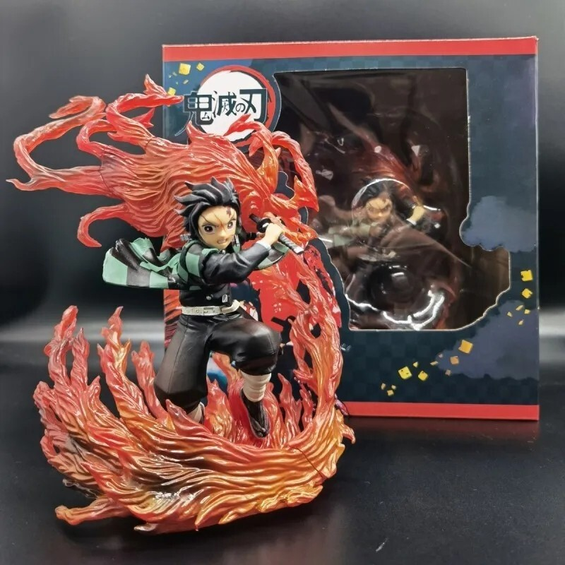
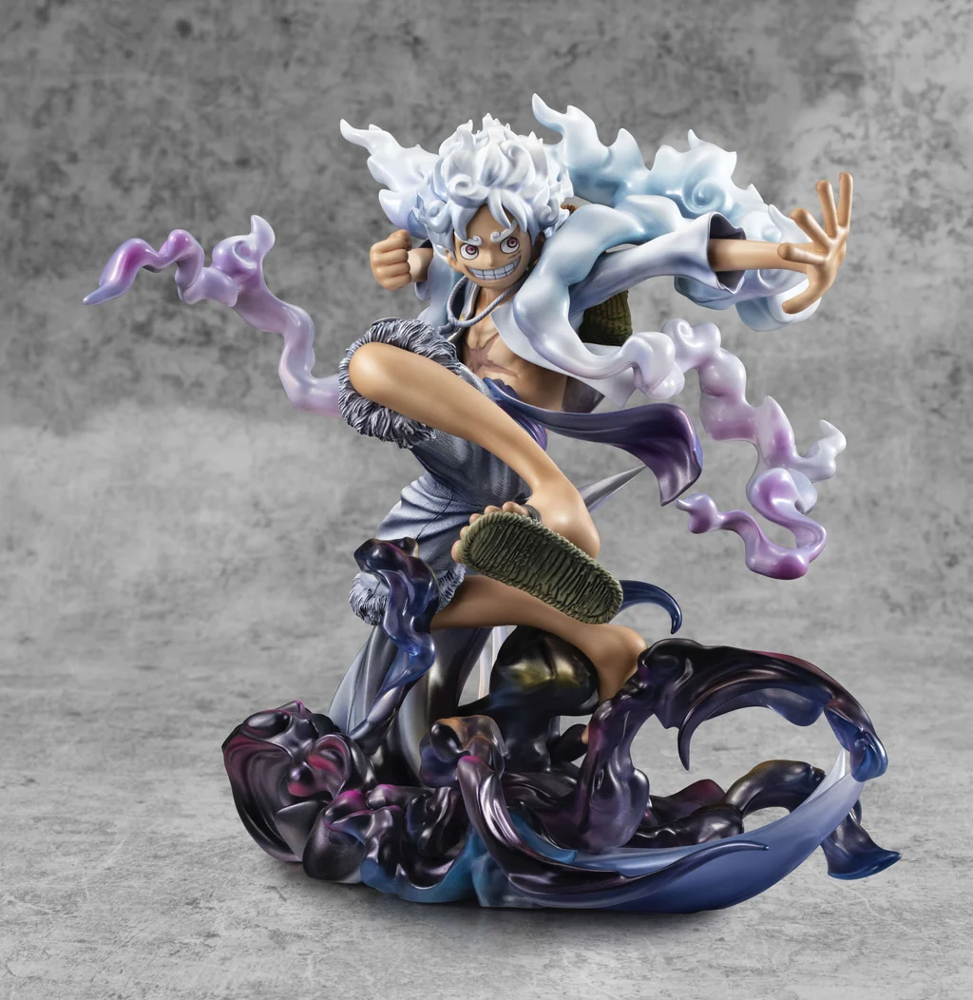

Demon Slayer: Tanjiro Kamado Figure
₱2,500 – ₱4,500
20cm PVC scale figure. Price varies by brand — official Banpresto/Bandai releases cost more than bootleg/scale versions.

Cocotaku Hub — anime figures and PS5 games for fans, by a fan. Where anime culture meets gaming, one figure and one game at a time.
₱2,500 – ₱4,500
20cm PVC scale figure. Price varies by brand — official Banpresto/Bandai releases cost more than bootleg/scale versions.

₱2,800 – ₱3,499
Second entry in the Final Fantasy VII remake project. Digital copies run cheaper (~₱2,800–3,000); physical copies from local retailers like Datablitz and Gameline are priced around ₱2,999–3,499.

₱3,000 – ₱6,000+
Limited edition figure. Price depends on scale and whether it's an official release (Bandai/Banpresto/MegaHouse) or third-party — official and limited editions run higher.
